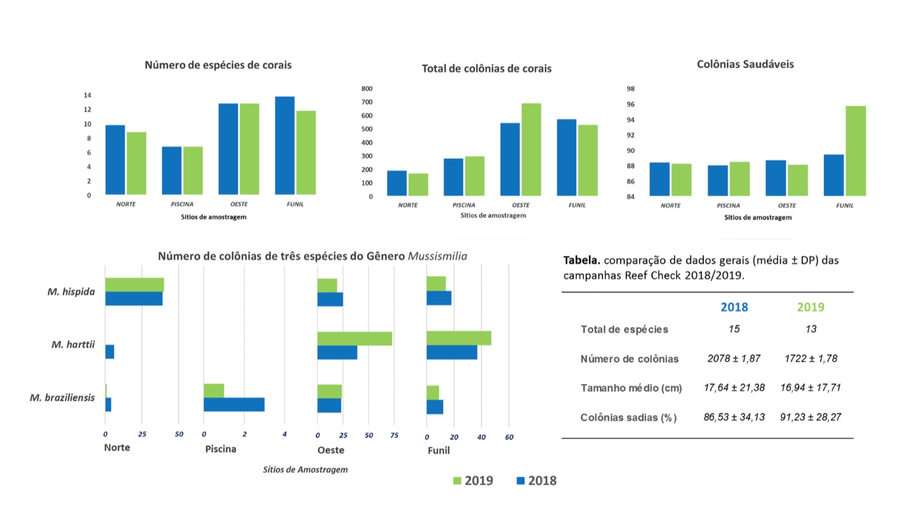

Observações da Água
Um parágrafo bem explicativo dos dados, o resultado desse trabalho você confere abaixo :)
Um parágrafo bem explicativo dos dados, o resultado desse trabalho você confere abaixo :)
Desde a década de 1980, mergulhadores e cientistas observam um declínio da saúde de alguns recifes. Em encontro internacional na década de 1990, cientistas discutiram esta questão e ficou clara a falta de informações sobre a saúde dos recifes ao redor do mundo. Além disso, eles usavam diferentes métodos em seus estudos, que não permitiam comparação entre os locais. Assim, era necessário um método específico, padronizado, comparável entre locais e capaz de detectar impactos. Surgiu então o protocolo internacional Reef Check. O Reef Check observa e registra indicadores como peixes, invertebrados (ouriço, lagosta, polvo, corais), tipos de substrato, doenças e branqueamento em corais. Vários cientistas, inclusive do Brasil, ajudaram a elaborar e adaptar o método para cada região. O programa foi implementado no Brasil pelo Instituto Recifes Costeiros em 2002, em parceria com o Ministério do Meio Ambiente. Em Porto Seguro, o Projeto Coral Vivo monitora 5 estações no Parque Municipal Marinho do Recife de Fora desde 2008.
Apresentamos aqui gráficos da saúde dos corais neste Parque em 2018, e abaixo uma abordagem comparativa com dados de saúde e abundancia entre os anos de 2018 e 2019.
